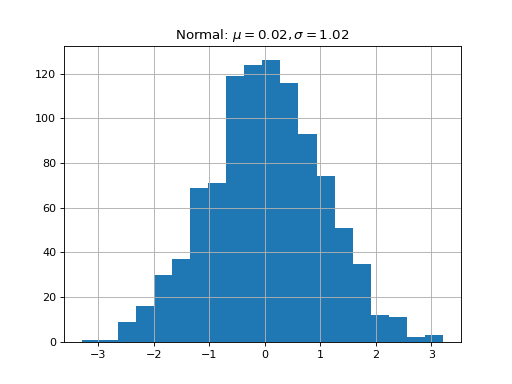

The Linear Kalman Filter¶
| Author(s): | Francois Roy |
|---|---|
| Date Created: | 03-12-2017 |
| Language: | None |
| Status: | Draft |
Description¶
The model class contains all the information about the Bayesian network.
Theory¶
A typical equation:
(1)¶\[T(\mathbf{x},0)=T_0(\mathbf{x}),\qquad \textrm{at }t=0.\]
Where \(T_0\) is the initial temperature.
(2)¶\[\begin{split}\int_{x_1}^{x_2} \varphi_n(x)\varphi_m(x)dx = \left\{
\begin{array}{rl}
1 & \text{if } m = n,\\
0 & \text{if } m\neq n.
\end{array} \right.\end{split}\]
Equation (1) and (2) have been used in to demonstrate...
Note
This is a note.
A simple bokeh plot?
(Source code, png, hires.png, pdf)
{kind=link}
{kind=link}

Sub-theory¶
A basic table is presented in Table 1.
| Boundary Type | \(k_1\) | \(k_2\) | \(s_1\) | \(s_2\) | \(\Lambda_1,~x=x_1\) | \(\Lambda_2,~x=x_2\) |
|---|---|---|---|---|---|---|
| Temperature, Dirichlet | 1 | 1 | 0 | 0 | \(\frac{\partial}{\partial \xi}G(x,\xi,t-\tau)\) | \(-\frac{\partial}{\partial \xi}G(x,\xi,t-\tau)\) |
| Heat Flux, Neumann | 0 | 0 | 1 | 1 | \(-G(x,\xi,t-\tau)\) | \(G(x,\xi,t-\tau)\) |
| Convection, Robin | <0 | >0 | 1 | 1 | \(-G(x,\xi,t-\tau)\) | \(G(x,\xi,t-\tau)\) |
| Mixed I | 1 | 0 | 0 | 1 | \(\frac{\partial}{\partial \xi}G(x,\xi,t-\tau)\) | \(G(x,\xi,t-\tau)\) |
| Mixed II | 0 | 1 | 1 | 0 | \(-G(x,\xi,t-\tau)\) | \(-\frac{\partial}{\partial \xi}G(x,\xi,t-\tau)\) |